contents | previous | next THERE are a thousand occasions in life, in which I feel that writing is better than speaking. When either the person I am speaking to, or the matter I am speaking upon, interests me greatly, I am the worst orator in the world; and, therefore, my fair fellow traveller, I write to you, for you must be convinced that I am deeply concerned for you and for your future happiness. Though I have not the pleasure of being acquainted with Mr. Montalbert, yet I will flatter myself that, when we meet, I shall find in him another friend.
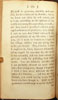 View image of 100 He must be generous, amiable, and candid, for he is beloved by Rosalie; but as we know not when he will return, and as I am, according to the opinion of the world, too young for a guardian, we must—ah! how cruel a necessity!—submit to the rigid ordinances of prudence; and, though I own to you that I shall relinquish the greatest pleasure of my life when I leave you, yet I mean to remain no longer at the village, whither you are going, than to see you settled. This, I know, is what I ought to do, since, however, disinterested my regard for you may be, the world is too uncandid, and too little refined, to give me credit for possessing such sentiments. You are infinitely amiable, and I am probably allowed no more virtue than other young men, thought I hope and I think I have never deserved the character of a libertine....All this, my dear Madam, you could not say to me, but I know you have thought it. Half my acquaintance would laugh at me for saying it,
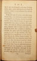 View image of 101but I am accustomed to do what I know to be right, and to disregard every kind of censure which is not incurred by actions really bad. With this turn of mind, and after what I have said, you will believe that I would not propose any scheme, merely to gratify myself, which should break in upon the regulations that seem necessary for your sake; nor will I, without your approbation, execute that I have in view. A friend of mine has a house at Hastings, whither he goes with his family for a month or two in the autumn, the only time when his engagements at the bar allows him to be absent from London. I once passed a few days with him there, and I am on that footing of intimacy which allows me to ask for the use of his house. He knows I am an unsettled itinerant, and will not be surprised at my sudden appearance in England, although he has lost sight of me for eighteen or twenty months, and believes me either in Spain,
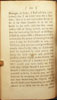 View image of 102 Portugal, or Italy; I shall tell him (what is true) that I am come home for a short time; that it is not convenient for me to be so far from London as at my own house in the west; and that this, united with a wish of being retired, are my reasons for borrowing his house at Hastings; I shall be within such a distance as to have continually the power of learning how and when I may be serviceable to you....Will you then give me your permission to remain there?—My visits to Eastbourne shall be regulated by your orders, and surely the most vigilant and censorious prudery cannot object to the friendly and unfrequent visits of a brother to a sister. Oh! would you were really my sister, with what delight should I then avow the interest I take in your happiness; suppose yourself to be so, I entreat you, and honour me by accepting the enclosed without ever mentioning the subject, lest I should doubt your honouring me with that esteem as to allow me to use that affec-
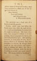 View image of 103 tionate names of friend and brother, when I am permitted to assure you of the regard and esteem of,
The enclosure was a bank note of a hundred and fifty pounds. Rosalie, whose tears had fallen, she hardly knew why, while she read this letter, could not immediately determine how she ought to answer it. She had, it was true, time enough to consider it on her journey, but it hung upon her spirits, and drove sleep from her eyes. After placing, however, in every point of view, the intention which he so delicately asked her permission to execute, she thought there would be not only prudery and ingratitude in refusing her assent, but that it would show a mistrust, which she saw as degrading to herself and unjust towards him. The money which he sent her gave
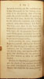 View image of 104her more concern, yet she considered that it was less uneasy to her feelings to receive it in this manner, than to be laid under the painful necessity of applying to him for small sums, should she wait long for the letters she expected, and, till they arrived, what other resource had she?—The hope, ever alive in her heart, that Montalbert would soon return, and gratefully repay all the pecuniary favours she owed Walsingham, reconciled her to this temporary obligation, which she knew could be no inconvenience to him. In the morning she arose, impatient to begin her journey, and sent for Waters to get the note changed in order to pay her expences; but he informed her, that it was already done, and that his master had given him directions for the journey in the same manner as when he travelled himself. Rosalie, her Marseilloise maid Claudine, and the object of her constant solicitude, her child, were place in a chaise, which Waters had hired for the whole journey,
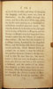 View image of 105 to avoid the trouble and delay of changing baggage, and they were very soon at Chichester. As she passed through that town, and sat at the door of the inn, while the horses were putting to, a thousand recollections crowded upon her mind. The objects, formerly so familiar to her, brought back the days of Rosalie Lessington, and the strange vicissitudes that had happened since seemed rather like the fictions of romance than reality; she was then the daughter of a village curate, humbled by her supposed sisters, and shrinking with terror from paternal authority, which seemed likely to compel her to marry a man she disliked. Her present situation formed a strong contrast to that she was then in; but what was better?—She was now the daughter of parents who did not own her, a wife without a husband, and the mother of an infant who seemed to have been born to misfortunes. While she indulged these mournful thoughts she did not venture to show herself, lest she should be known; this
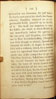 View image of 106 precaution was fortunate, for just before the horses were put to her chaise, her former admirer, Hughson, mounted on an ungovernable horse, pranced up to the side of it. The beast was impatient to enter the stable; the chaise in which Rosalie sat was immediately before the gateway of the inn yard, and Hughson, ever solicitous to show his horsemanship, (though he now little thought to whom), spurred and irritated his horse; it began to rear and kick with a violence, which, for a moment, made her apprehend some mischief to the chaise that might compel her to get out. This fear, however, lasted but a moment; the contest between the horse and his rider, the latter of whom seemed much the least rational of the two, was ended, at least in that spot, for the former springing away with great swiftness was instantly out of sight, while the boys and people in the street, staring after him, exclaimed, "That Parson Hughson's horse had run'd clear away wi un."
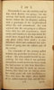 View image of 107Fortunately it was the contrary road to that which Rosalie was going; but the carriage had hardly proceeded ten paces farther before she saw Blagham walking with a gentleman of the neighbourhood whom she well remembered. She now rejoiced that she was going a distance from these her old acquaintance, whose notice and intrusion it was improbable she could have escaped had she remained at any place within their reach; a consideration which had confirmed her resolution of going into the eastern part of the country. The remainder of her journey passed without any particular occurrence or accident. She often amused herself by calculating the time when it was probable Montalbert would receive the letter which she had written to him from Marseilles; but this depended so much on circumstances, that there were no date on which her mind could rest with satisfaction.—The time when she might assure herself of an answer from her real, and her sup-
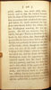 View image of 108 posed, mother, was more easily ascertained, and to that she looked forward with the hope of having much of her present uncertainty and uneasiness alleviated. Just before the chaise mounted the high down immediately before the village, she saw Walsingham watching for her approach. He did not, however, stop the chaise, but gave Waters a direction to the house he had taken, that there might be no necessity for her to drive first to an inn. Rosalie was presently set down at the door of this house, which, though the most retired, was one of the most commodious lodgings in the village; when her baggage was taken out, and the chaise discharged, Walsingham made his appearance. He inquired eagerly how she found herself after her journey, and how her little boy was?—then asked, if she approved of her apartments?—He told her dinner was ready, and solicited leave to dine with her, adding that he had a chaise ready to carry him away as soon as dinner was over. All this passed with a rapidity which Ro-
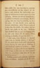 View image of 109salie easily saw was intended to prevent any conversation on the subject of his letter; and, indeed, she had neither courage or inclination to enter upon it at that moment. Dinner was served immediately; it passed in common conversation, Rosalie trying, but not very successfully, to bear her part. It was hardly over, and the servant withdrawn, when Waters came in to say that the chaise, his master her ordered, was ready at the inn. Walsingham directed to him to put his baggage into it, and wait there till he came; then, turning to Rosalie, he gravely said—— "And now, dear Madam, it depends upon you to decide whither I shall go? If you think there is the least impropriety in my staying so near you at Hastings, I will direct my course to London....Alas! (added he), no place affords me happiness; and I have at this time no other purpose than to contribute what may be in my power to yours." Rosalie, pained and confused, knew not what to answer. A sense of all the obli-
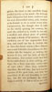 View image of 110 gations she owed to this excellent friend pressed heavily on her mind; she believed those obligations had been conferred with the most disinterested views, and, cautious as he seemed to be to avoid every other interpretation, she thought that to insist cause she resided in it, would be not only a needless and absurd piece of prudery, but imply a doubt of his motives; she was conscious too of her unprotected situation, and could not but be sensible that to have this friend within a short distance was a most desirable circumstance for her; neither did she imagine, as nothing was known of her, and but little of him in this country, that censure could find food for its malevolence in their residing, perhaps, for a short time only, within miles of each other. After some hesitation, therefore, she told him, that such was her opinion of his good sense, and such her conviction of the real friendship he bore her, that she was persuaded she might leave it entirely to him to act as was most
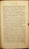 View image of 111agreeable or convenient to himself; at the same time she took from her pocket the bank note he had enclosed to her, entreating him to allow her to return it. The conclusion of Rosalie's speech seemed to hurt, as much as the beginning of it had gratified Walsingham.—"Ah! Mrs. Montalbert, (said he), can you talk of few services I have had the good fortune to render you, and yet mention such a trifle as that?—I beseech you do not mortify me, by suffering any obligation of this nature to dwell on your mind." Rosalie, however, insisted of giving him an acknowledgement of it in writing, to which he unwillingly consented. He then entreated her to let him know the moment she heard from her friends; asked if he might not ride over some morning about the time she expected her letters, as he had sent for his horses. Having received her assent, and tenderly caressed her little boy, he left her with visible reluctance, and, going to the inn, threw himself into
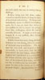 View image of 112the post-chaise that was to convey him to Hastings. Rosalie, being now left alone, endeavoured to calm her spirits, so long the sport of incertitude and anxiety. Nothing could immediately occur to disturb her transient quiet, for it was yet some days before it was possible for her to receive the answers from Mrs. Lessington, which she had so earnestly solicited. It might even be prolonged, if, as was possible, Mrs. Vyvian was in the north. Rosalie found that every thing had been settled in her new abode, where the people of the house were to attend her. The woman was very civil, and seemed to have no curiosity to learn more than she had been told of her new lodger, whom Walsingham had represented as a young lady, his distant relation, who was in expedition of her husband from Italy, and that her stay in Eastbourne was uncertain. It might be only a few weeks, or it might be much longer. An uncertainty that af-
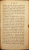 View image of 113forded a prospect of great advantage to this landlady, while the liberality, with which her terms had been agreed to, aided the favourable impression that could hardly fail to be given by the innocence, beauty, and sweetness of Rosalie's countenance and manner. Claudine, carrying the infant boy, was the constant companion of her mistress's walks, which beguiled the greatest part of every day, and were varied between the green and shady lanes, open downs, or the immediate borders of the sea. On the sea itself Rosalie often fixed her eyes for hours, and her imagination went forth in conjectures about Montalbert, which became less and less pleasant as time stole on. From these pensive wanderings she constantly returned at the hours when letters were delivered, and impatiently inquired if there were any addressed to Mrs. Sheffield; but a week wore away, and none arrived; yet it was certain that she might have had an answer in that time; Walsingham too had reckoned the ter-
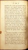 View image of 114mination of a week as a period when intelligence was almost certain, and he, therefore, availed himself of the permission he had received to come over.—Rosalie rejoiced to see him, and sought not to conceal the satisfaction it gave her, while he appeared more dejected and melancholy than she had ever yet known. He had now no object in view on which to exercise his benevolence; nothing to rouse him from the despondence which so frequently obscured the faculties of his mind; and to this cause, Rosalie, who knew from observation that he required some generous motive for active exertion, attributed the gloom which hung over him. This heavy depression of spirits seemed to break away after he had conversed with her an hour or two, and, in proportion as she appeared uneasy at the delay of Mrs. Lessington's answer, he found reasons to appease that fiend Inquietude. At length they began to converse on indifferent subjects, and, during their walk
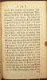 View image of 115 on the hill, attended by Claudine, who was always directed to follow them, Walsingham insensibly led the discourse to his own history and affairs. He talked of his family, and lamented that he was left an isolated being in the world. "I have now (said he) no nearer relation than a cousin of nearly my own age, who inherits a very large fortune from another branch of my family, and from his mother, who was an heiress; but our dispositions and our pursuits are so different, that we never associate, and have rarely met in England but on some family business.—Sommers Walsingham is one of the most gay and dissipated young men about town; plays a great deal, and has establishments and connections in a style of expence, where I have little inclination to rival him. He was abroad when I was there last; the French and Italians, among whom we occasionally met, were so dazzled by the superior splendour of this my magnificent cousin, that they distinguish him by the title of Milor Walsingham, while I was
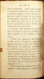 View image of 116only Le Chevalier. I have often thought it singularly unfortunate, that the only remaining relation I have should be a man with whom I cannot be on a footing of friendship, especially as when I die, for I shall now never marry, he will possess all my landed property, which is entailed on the next male heir." "I hope (said Rosalie) that you will live very long to enjoy it yourself, and then transmit it to a family of your own." "There was (answered Walsingham) a time when I thought I might be so happy—but that is now over!—For me, all prospect, all possibility, of happiness is vanished—never, alas! to return."——A long and mournful pause now ensued, which Rosalie had no courage to break, though she would fain have spoken words of consolation. Walsingham at last, speaking lower, and in a more dejected tone, went on—— "For every evil, but that which I have endured, there may be a remedy—but
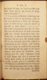 View image of 117the death of what we love!——Do you think there can be any sorrow so deep, and so incurable?" "Yes, (answered Rosalie, believing that he found a sort of melancholy relief in this conversation), I think the estrangement of those we love may be almost as dreadful as their death - - - - - - - - - -." She could not proceed—for she was sensible that should either of these calamities assail her, should Montalbert have deserted her, or should death have divided him from her for ever, she should totally fail in that fortitude which she wished to recommend to her friend; and finding her voice refuse to continue the argument with firmness, she was glad of the interruption now given by Claudine, who, coming near her, said, "Madame, Viola la belle Dame qui m'a si souvent loit depuis deux jours, et qui fait tant des caresses a notre petit."——Rosalie, who had hitherto avoided the very few strangers who were occasionally seen in the village, was now so near the person of whom
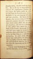 View image of 118Claudine spoke, that she could not escape her. But as she by no means desired to cultivate the acquaintance Claudine had thus begun, she hastily passed on, while the lady stopt the Frenchwoman, to whom she spoke in her own language with great ease and volubility. Her figure was very singular; she was not young, and her dress (then less common than now) was in that style which women affect who are above all prejudices, and look in a morning as if they passed the kennel; but though the habit and half boots might by symptoms of a masculine spirit, which some have believed to be the same thing as a masculine understanding, the pains which had evidently been taken about her face, which was very highly coloured, might convince the most superficial observer, that the toilet of this fair Amazonian was by no means neglected. "Surely (said Walsingham) I have often seen that lady; it is, I think, a face
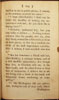 View image of 119familiar to me in public places; I cannot at this moment, recollect her name." "I hope (said Rosalie) I shall not be under the necessity of making any acquaintance with her; do you think she is staying here?" "Probably, (answered he); but you may easily avoid her.....Nothing is more common than for people, who are, what they fancy, retired for a few weeks to some of these places, to live in a constant exercise of the most impertinent curiosity. Oh! I believe I now recollect who that is." "She has sometimes a friend with her, (said Rosalie), a younger woman, and of a less manlike appearance; but though they live, as Claudine tells me, in the same house, and the other scorns to be a sort of companion, I observe she is often sitting with a book in her hand, and frequently seems meditating or composing." To this Walsingham did not answer, and, during the rest of their walk, which
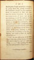 View image of 120Walsingham sought purposely to lengthen by going about the woody environs of the nobleman's house* in the neighbourhood, he appeared to sink into more than his former dejection. It was now late in the month of June, and the sun was declining in all the radiance of that delicious month; Rosalie, to whose recollection it brought the evening sky, which she had so often, with a despairing heart, contemplated from Formiscusa, made some remark on the beauty of the scene; to which Walsingham, looking a moment earnestly and mournfully in her face, said sighing, yet with a kind of impatient quickness—— "Ah! do not talk to me of the splendour of the sun—of the beauty of nature! All—all is dead to me!—I enjoy nothing - - - - - -" then pausing, he added, in a low and plaintive voice——
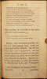 View image of 121"Mon Cœur n'a plus rien sur la terre Then pausing, he repeated the last lines with some little variation—— "Mon cœur n'a plus rien sur la terre Rosalie, who understood perfectly the force of these pathetic lines, could not help being sensibly affected. She did not know they were a quotation*; and was at once surprised and pained by the particular manner in which the two last lines were a second time spoken. Equally unwilling and unable to make any remarks on what she had heard, and Walsingham
appearing 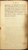 View image of 122 appearing to be disinclined to converse, they both continued silent till they reached a place where one path led to the inn, and another to the habitation of Rosalie; Walsingham there wished her a good evening, and telling her he should be over again soon, to know if her letters were arrived, he departed.
|
){kind=link}
){kind=link}
){kind=link}
){kind=link}
){kind=link}
){kind=link}
){kind=link}
){kind=link}
){kind=link}
){kind=link}
){kind=link}
){kind=link}
){kind=link}
){kind=link}
){kind=link}
){kind=link}
){kind=link}
){kind=link}
){kind=link}
){kind=link}
){kind=link}
){kind=link}
){kind=link}